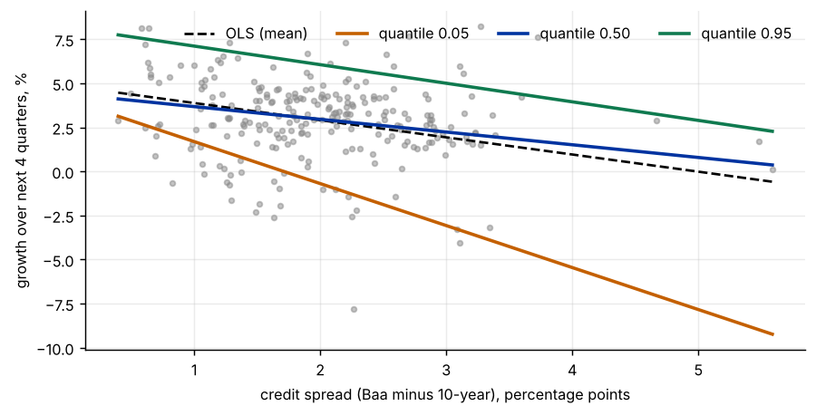
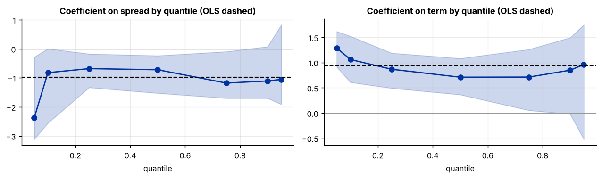
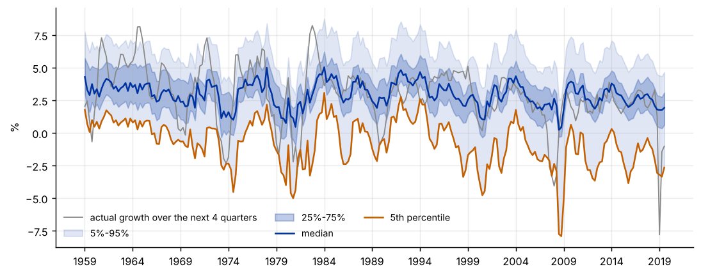

Step 1The question and the model
A regression of growth on financial conditions tells us about the average. A policymaker or an investor often cares about the bad tail: how weak could growth be if credit spreads widen? Our question is: do credit spreads and the yield curve shift the whole distribution of future U.S. GDP growth, or mainly its lower tail? This is the "growth at risk" idea of Adrian, Boyarchenko and Giannone (2019).
Quantile regression models the \(\tau\)-th quantile of the outcome given the regressors:
where \(\rho_\tau\) is the check (pinball) loss. For \(\tau=0.5\) this is median regression. The outcome is \(y_{t+4}=100\,[\ln \mathrm{GDP}_{t+4}-\ln \mathrm{GDP}_t]\), growth over the next four quarters.
| Symbol | Variable | Definition |
|---|---|---|
| \(y_{t+4}\) | growth_next4 |
GDP growth over the next four quarters, percent |
| spread | spread |
Baa corporate bond yield minus the 10-year Treasury yield, percentage points |
| term | term |
10-year Treasury yield minus the 3-month Treasury bill rate |
| growth | growth |
current quarterly GDP growth, annualised percent |
Before you estimate anything
Write down the claim you want to test. "Spreads matter" is a claim about the mean. "Spreads matter more for the bad tail than for the median" is a claim about \(\beta(0.05)\) against \(\beta(0.5)\), and it needs its own test. A larger point estimate in the tail is not enough, because tail estimates are noisy.
How to write it: model section
We estimate quantile regressions of four-quarter-ahead real GDP growth on the Baa–Treasury credit spread, the term spread and current growth, at the 5th, 10th, 25th, 50th, 75th, 90th and 95th percentiles. The coefficients minimise the check loss of Koenker and Bassett (1978). Because the four-quarter growth rates overlap, standard errors come from a moving-block bootstrap with blocks of eight quarters.
Step 2Load the data and look at the relationship
import warnings; warnings.filterwarnings("ignore")
import numpy as np, pandas as pd
import matplotlib.pyplot as plt
import statsmodels.api as sm
from statsmodels.regression.quantile_regression import QuantReg
d = pd.read_csv("growth_risk.csv").set_index("date")
print(d.index[0], "to", d.index[-1], "|", len(d), "quarters")
print(d.describe().round(2).loc[["mean", "std", "min", "25%", "50%", "75%", "max"]].T)
print("\nQuantiles of next-year growth:", d.growth_next4.quantile([.05, .25, .5, .75, .95]).round(2).to_dict())
y = d.growth_next4.values
X = sm.add_constant(d[["spread", "term", "growth"]])
names = list(X.columns); X = X.values
fig, ax = plt.subplots(figsize=(7, 3.6))
ax.scatter(d.spread, d.growth_next4, s=10, alpha=.5, color="#888")
xs = np.linspace(d.spread.min(), d.spread.max(), 50)
Xg = np.column_stack([np.ones(50), xs, np.full(50, d.term.mean()), np.full(50, d.growth.mean())])
ax.plot(xs, Xg @ sm.OLS(y, X).fit().params, color="#000", lw=1.5, ls="--", label="OLS (mean)")
for tau, c in [(.05, "#c46000"), (.5, "#0033a0"), (.95, "#0f7a4f")]:
ax.plot(xs, Xg @ QuantReg(y, X).fit(q=tau).params, color=c, lw=2, label=f"quantile {tau:.2f}")
ax.set_xlabel("credit spread (Baa minus 10-year), percentage points"); ax.set_ylabel("growth over next 4 quarters, %"); ax.legend(frameon=False, ncol=4, loc="upper right")
plt.tight_layout()1959Q2 to 2019Q4 | 243 quarters
mean std min 25% 50% 75% max
growth_next4 2.91 2.29 -7.80 1.78 2.96 4.24 8.23
growth 3.02 3.26 -8.85 1.38 3.04 4.59 15.17
spread 2.00 0.80 0.40 1.48 1.92 2.51 5.59
term 1.51 1.18 -1.43 0.62 1.50 2.55 3.80
Quantiles of next-year growth: {0.05: -1.38, 0.25: 1.78, 0.5: 2.96, 0.75: 4.24, 0.95: 6.3}
How to read it
The sample has 243 quarters, from 1959Q2 to 2019Q4. Growth over the next four quarters averages 2.91% with a standard deviation of 2.29. Its 5th percentile is −1.38% and its 95th percentile is 6.30%, so one year in twenty has growth below −1.4%. In the figure every line slopes down: wider credit spreads go with weaker growth at every quantile. The line for the 5th percentile (orange) is the steepest, and the OLS line (dashed) sits between the lines. The last forecast origin is 2019Q4, so that the pandemic quarters are not used as predictors. The lowest outcome in the sample, −7.80%, is the year after 2019Q2, which includes the 2020 collapse.
Step 3Estimate the quantile regressions
taus = [.05, .1, .25, .5, .75, .9, .95]
est = pd.DataFrame({tau: QuantReg(y, X).fit(q=tau, max_iter=5000).params for tau in taus}, index=names).T
est.index.name = "quantile"
ols = sm.OLS(y, X).fit()
print("Quantile regression coefficients")
print(est.round(2).to_string())
print("\nOLS coefficients: ", dict(zip(names, ols.params.round(2))))Quantile regression coefficients
const spread term growth
quantile
0.05 2.03 -2.38 1.29 0.03
0.10 0.15 -0.82 1.06 0.10
0.25 1.66 -0.68 0.87 0.08
0.50 3.04 -0.72 0.71 0.10
0.75 5.34 -1.18 0.71 0.04
0.90 5.91 -1.11 0.85 0.06
0.95 6.44 -1.05 0.96 0.09
OLS coefficients: {'const': np.float64(3.2), 'spread': np.float64(-0.97), 'term': np.float64(0.94), 'growth': np.float64(0.08)}How to read it
The coefficient on the credit spread is negative at every quantile but not stable across them: −2.38 at the 5th percentile, between −0.68 and −0.82 at the 10th, 25th and 50th percentiles, and −1.05 to −1.18 at the upper quantiles. The OLS coefficient, −0.97, averages over this pattern. A one-point wider spread lowers the median of next year's growth by 0.72 points but the 5th percentile by 2.38 points. The term spread has a positive coefficient at all quantiles (0.71 to 1.29, OLS 0.94), largest at the 5th percentile. Current growth adds little (0.03 to 0.10). Point estimates are only the start: the next step asks how precise they are.
Step 4Inference: a block bootstrap
rng = np.random.default_rng(2024)
n, L, R = len(y), 8, 500
nb = int(np.ceil(n / L))
draws = {tau: [] for tau in taus}
for b in range(R): # moving-block bootstrap of the rows
start = rng.integers(0, n - L + 1, nb)
idx = np.concatenate([np.arange(s, s + L) for s in start])[:n]
for tau in taus:
draws[tau].append(QuantReg(y[idx], X[idx]).fit(q=tau, max_iter=5000).params)
draws = {tau: np.array(v) for tau, v in draws.items()}
rows = []
for tau in taus:
f = QuantReg(y, X).fit(q=tau)
lo, hi = np.percentile(draws[tau][:, 1], [5, 95])
rows.append((tau, f.params[1], f.bse[1], draws[tau][:, 1].std(), lo, hi))
tb = pd.DataFrame(rows, columns=["quantile", "spread coef.", "default s.e.", "bootstrap s.e.", "90% low", "90% high"]).set_index("quantile")
print("Coefficient on the credit spread")
print(tb.round(2).to_string())Coefficient on the credit spread
spread coef. default s.e. bootstrap s.e. 90% low 90% high
quantile
0.05 -2.38 0.39 1.06 -3.11 -0.29
0.10 -0.82 0.31 0.81 -2.55 0.01
0.25 -0.68 0.25 0.37 -1.33 -0.17
0.50 -0.72 0.21 0.40 -1.53 -0.24
0.75 -1.18 0.30 0.49 -1.70 -0.09
0.90 -1.11 0.40 0.57 -1.70 0.08
0.95 -1.05 0.71 0.79 -1.91 0.83How to read it
The default standard errors are too small. At the 5th percentile the default value is 0.39 against a bootstrap value of 1.06, and at the median 0.21 against 0.40. They assume independent errors, but growth over four quarters overlaps with growth over the neighbouring quarters, so the errors are autocorrelated. The moving-block bootstrap resamples blocks of eight consecutive quarters and keeps that dependence. With the bootstrap standard errors the 90% interval for the spread effect excludes zero at the 5th, 25th, 50th and 75th percentiles, and only just reaches zero at the 10th and 90th. At the 95th percentile it includes zero (−1.91 to 0.83). Tails are always less precise than the centre, because there are few observations there.
How to write it: results
A one-point wider credit spread lowers the median of next year's growth by 0.72 percentage points (bootstrap s.e. 0.40) and its 5th percentile by 2.38 points (bootstrap s.e. 1.06). The default standard errors, which assume independent errors, are 0.21 and 0.39, too small by a factor of two to three because the four-quarter growth rates overlap. The 90% bootstrap interval for the 5th-percentile coefficient is −3.11 to −0.29.
Step 5Do the effects differ across quantiles?
def diff_test(a, b, k):
est_d = est.loc[a, names[k]] - est.loc[b, names[k]]
dd = draws[a][:, k] - draws[b][:, k]
centred = dd - dd.mean() # bootstrap distribution under H0: no difference
p = (np.abs(centred) >= abs(est_d)).mean()
return est_d, np.percentile(dd, [2.5, 97.5]), p
print("Difference between the coefficient at two quantiles (bootstrap 95% interval and p-value)")
for k in (1, 2):
for a, b in [(.05, .5), (.95, .5), (.05, .95)]:
e_, ci, p_ = diff_test(a, b, k)
print(f"{names[k]:7s} q{a:.2f} - q{b:.2f}: {e_:6.2f} [{ci[0]:5.2f}, {ci[1]:5.2f}] p = {p_:.3f}")
fig, ax = plt.subplots(1, 2, figsize=(10, 3.0))
for a_, k in zip(ax, (1, 2)):
c = est[names[k]].values
lo, hi = np.array([np.percentile(draws[t][:, k], [5, 95]) for t in taus]).T
a_.plot(taus, c, marker="o", color="#0033a0"); a_.fill_between(taus, lo, hi, alpha=.2, color="#0033a0")
a_.axhline(ols.params[k], color="#000", ls="--", lw=1.2); a_.axhline(0, color="#999", lw=.8)
a_.set_title(f"Coefficient on {names[k]} by quantile (OLS dashed)"); a_.set_xlabel("quantile")
plt.tight_layout()Difference between the coefficient at two quantiles (bootstrap 95% interval and p-value) spread q0.05 - q0.50: -1.66 [-2.55, 0.99] p = 0.078 spread q0.95 - q0.50: -0.33 [-1.09, 1.72] p = 0.604 spread q0.05 - q0.95: -1.33 [-3.28, 1.29] p = 0.318 term q0.05 - q0.50: 0.58 [ 0.09, 1.10] p = 0.032 term q0.95 - q0.50: 0.25 [-1.36, 1.05] p = 0.698 term q0.05 - q0.95: 0.33 [-0.67, 2.00] p = 0.686

How to read it
The question is whether the coefficients differ across quantiles, and the answer needs a test on the difference. For the credit spread, the 5th-percentile coefficient is 1.66 lower than the median coefficient, but the interval (−2.55 to 0.99) includes zero and the p-value is 0.078, so the evidence for a stronger tail effect is suggestive and not conclusive at 5%. The 95th percentile does not differ from the median (p = 0.60). The term spread is different: its effect is 0.58 larger at the 5th percentile than at the median (95% interval 0.09 to 1.10, p = 0.032). In the figure the bands widen toward the tails, and the OLS line (dashed) lies within the band for most quantiles. Report the tests, not only the plot.
Step 6Quantile crossing and the growth-at-risk path
fit_q = pd.DataFrame({tau: X @ QuantReg(y, X).fit(q=tau).params for tau in taus}, index=d.index)
cross = (fit_q.diff(axis=1).iloc[:, 1:] < 0).any(axis=1)
print(f"Quarters in which the fitted quantiles cross: {cross.sum()} of {len(d)}")
fit_s = pd.DataFrame(np.sort(fit_q.values, axis=1), index=d.index, columns=taus) # rearrangement (Chernozhukov et al.)
fig, ax = plt.subplots(figsize=(8.5, 3.4))
ax.plot(d.growth_next4.values, color="#888", lw=1, label="actual growth over the next 4 quarters")
ax.fill_between(range(len(d)), fit_s[.05], fit_s[.95], color="#0033a0", alpha=.12, label="5%-95%")
ax.fill_between(range(len(d)), fit_s[.25], fit_s[.75], color="#0033a0", alpha=.25, label="25%-75%")
ax.plot(fit_s[.5].values, color="#0033a0", lw=1.4, label="median"); ax.plot(fit_s[.05].values, color="#c46000", lw=1.4, label="5th percentile")
ticks = list(range(0, len(d), 20)); ax.set_xticks(ticks); ax.set_xticklabels([d.index[i][:4] for i in ticks])
ax.set_ylabel("%"); ax.legend(frameon=False, ncol=3, fontsize=8, loc="lower left")
plt.tight_layout()
g5 = fit_s[.05]
print(f"Growth at risk (fitted 5th percentile): average {g5.mean():.2f}%, lowest {g5.min():.2f}% in {d.index[int(np.argmin(g5.values))]}")
print("Share of quarters with actual growth below the fitted quantile:", {t: round(float((d.growth_next4.values < fit_s[t].values).mean()), 3) for t in (.05, .25, .5, .75, .95)})Quarters in which the fitted quantiles cross: 42 of 243
Growth at risk (fitted 5th percentile): average -0.74%, lowest -7.91% in 2009Q1
Share of quarters with actual growth below the fitted quantile: {0.05: 0.049, 0.25: 0.259, 0.5: 0.502, 0.75: 0.749, 0.95: 0.947}
How to read it
The fitted quantiles cross in 42 of 243 quarters (17%), which a true set of quantiles cannot do. The sorted values, used in the figure, are the usual remedy. The fitted 5th percentile, the growth at risk, averages −0.74% and falls to −7.91% in 2009Q1, when spreads were at their highest. That value is an extrapolation from a few extreme observations, so treat it with care. In-sample, the share of quarters with growth below each fitted quantile is close to the nominal level (4.9%, 25.9%, 50.2%, 74.9% and 94.7%). This is almost guaranteed by the way the estimator works, so it is not evidence that the model forecasts well. The next step is.
Step 7Test the forecasts out of sample
from scipy import stats
use = [.05, .25, .5, .75, .95]
first = list(d.index).index("1985Q1")
rows = []
for i in range(first, len(d)):
tr = np.arange(0, i - 3) # outcomes known at time i: rows up to i-4
row = {"date": d.index[i], "y": y[i]}
for tau in use:
row[("qr", tau)] = float(X[i] @ QuantReg(y[tr], X[tr]).fit(q=tau, max_iter=5000).params)
row[("bench", tau)] = float(np.quantile(y[tr], tau))
rows.append(row)
P = pd.DataFrame(rows).set_index("date")
pinball = lambda u, t: np.where(u >= 0, t * u, (t - 1) * u)
out = []
for tau in use:
l_qr = pinball(P.y.values - P[("qr", tau)].values, tau)
l_b = pinball(P.y.values - P[("bench", tau)].values, tau)
res = sm.OLS(l_qr - l_b, np.ones(len(l_b))).fit(cov_type="HAC", cov_kwds={"maxlags": 4})
out.append((tau, l_qr.mean(), l_b.mean(), 1 - l_qr.mean() / l_b.mean(), res.pvalues[0], (P.y.values < P[("qr", tau)].values).mean(), (P.y.values < P[("bench", tau)].values).mean()))
tab = pd.DataFrame(out, columns=["quantile", "loss, regression", "loss, unconditional", "skill", "DM p-value", "coverage, regression", "coverage, uncond."]).set_index("quantile")
print(f"Out-of-sample forecasts, expanding window, {len(P)} quarters ({P.index[0]} to {P.index[-1]})")
print(tab.round(3).to_string())
print(f"\nMean next-year growth: {d.growth_next4[:'1984Q4'].mean():.2f}% in 1959-1984 and {d.growth_next4['1985Q1':].mean():.2f}% from 1985 on")Out-of-sample forecasts, expanding window, 140 quarters (1985Q1 to 2019Q4)
loss, regression loss, unconditional skill DM p-value coverage, regression coverage, uncond.
quantile
0.05 0.295 0.305 0.033 0.680 0.107 0.050
0.25 0.645 0.606 -0.065 0.564 0.379 0.314
0.50 0.723 0.685 -0.055 0.610 0.700 0.729
0.75 0.612 0.578 -0.059 0.476 0.929 0.993
0.95 0.227 0.217 -0.047 0.300 1.000 1.000
Mean next-year growth: 3.51% in 1959-1984 and 2.47% from 1985 onHow to read it
The out-of-sample result is sobering and typical of the growth-at-risk literature. The regression has a lower check loss than the unconditional quantile only at the 5th percentile (0.295 against 0.305, skill 3.3%), and that difference is far from significant (p = 0.68). At the 25th, 50th, 75th and 95th percentiles it is worse (skill −4.7% to −6.5%). The coverage columns show why: the actual growth fell below the 5th-percentile forecast in 10.7% of quarters, instead of 5%, and below the median forecast in 70% of quarters, instead of 50%. The unconditional benchmark has the same problem (5.0% and 72.9%). Growth was lower after 1985 (2.47% a year) than before (3.51%), so every forecast estimated on the early sample was too optimistic. Two lessons follow. First, a good in-sample fit does not mean the predictive relation is stable. Second, with a break in trend growth, consider a rolling window or a control for trend growth, and report the out-of-sample test with the in-sample estimates.
How to write it: forecast evaluation
We evaluate the quantile forecasts out of sample with an expanding window, using at each date only the outcomes already observed, for 140 quarters from 1985Q1 to 2019Q4. Against the unconditional quantiles of the training sample, the regression has a lower check loss only at the 5th percentile (skill 3.3%), and the difference is not significant (Diebold–Mariano p = 0.68). At the other quantiles it does worse (skill −4.7% to −6.5%). Both sets of forecasts are poorly calibrated, because average growth fell from 3.51% before 1985 to 2.47% afterwards.
Step 8What to report in the paper
| Item | What to show |
|---|---|
| Quantiles | which ones, and why (for risk work: 5%, 25%, 50%, 75%, 95%) |
| Estimates | the coefficient at each quantile with the OLS estimate for comparison |
| Inference | the bootstrap method, the block length and the number of draws |
| Heterogeneity | the test of equal coefficients across quantiles, not only a plot |
| Crossing | the number of crossings and whether you rearranged |
| Forecasts | pinball loss against an unconditional benchmark, the Diebold–Mariano test and coverage |
Common mistakes
- Using the default standard errors with overlapping outcomes. They assume independent errors. With four-quarter growth they are too small, as the table shows.
- Claiming a tail effect from a larger point estimate. Tail coefficients are noisy. Test the difference.
- Reading quantile paths that cross as a finding. Crossing is a sign of misspecification or of too little data in the tail. Sort the fitted values and report it.
- Evaluating a quantile forecast with squared error. Use the check loss for the quantile you forecast, and check coverage.
- Using in-sample fit as the test. Re-estimate with data known at each forecast date, as in the last step.